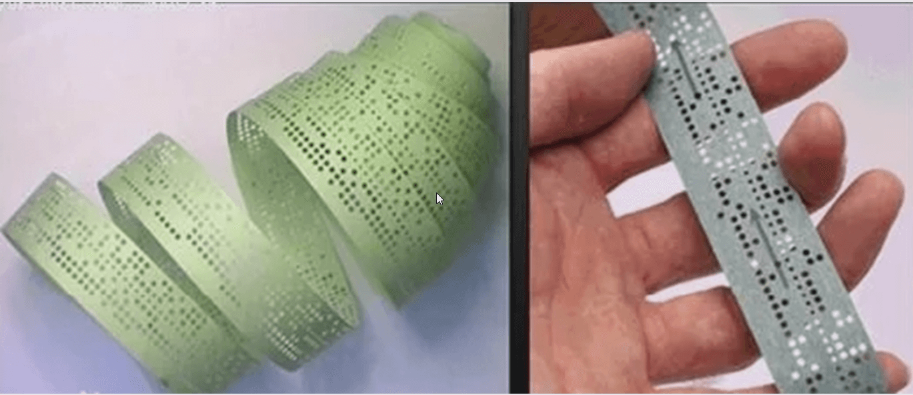
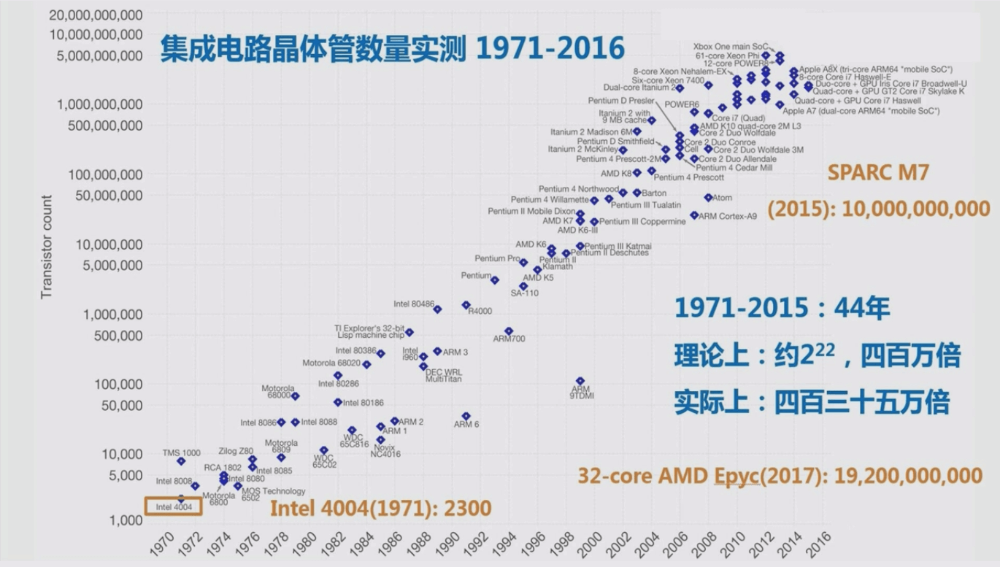

计算机基础和linux安装
计算机系统
计算机（Computer）：俗称电脑，是一种能接收和存储信息，并按照存储在其内部的程序对海量数据进行自动、高速地处理，然后把处理结果输出的现代化智能电子设备。
发明计算机的目标是代替人类去高效且高质量地完成工作。
计算机有很多形式，比如：生活中常见的家用电脑，笔记本，智能手机，平板电脑等，还有生产环境中提供重要业务支撑的各种服务器（Server），都算是计算机。
一台计算机要像人类一样完成工作,就需要相关的组成部分,共同协作实现人类某些功能
其中一个完整的计算机系统由硬件（Hardware）系统和软件（Software）系统两大部分组成
计算机硬件
计算机发展历史：
1.第一代计算机（1946-1957） 电子管时代
2.第二代计算机（1958-1964） 晶体管时代
3.第三代计算机（1965-1970） 集成电路时代
4.第四代计算机（1971以后） 大规模集成电路时代
世界上第一台计算机
1946年，世界上第一台计算机ENIAC（electronic numerical integrator and calculator 电子数字积分计算机）在美国宾州大学诞生，是美国奥伯丁武器试验场为了满足计算弹道需要而研制成的。使用了17468只电子管，占地170平方米，重达30吨，耗电174千瓦，耗资40多万美元。每秒可进行5000次加法或减法运算。
冯·诺依曼体系结构
1946年美籍匈牙利数学家冯·诺依曼于提出存储程序原理，把程序本身当作数据来对待，程序和该程序处理的数据用同样的方式储存。冯·诺依曼体系的要点是:
- 数字计算机的数制采用二进制，bit位，byte 字节1 byte =8 bit
- 计算机应该按照程序顺序执行
- 计算机硬件由运算器、控制器、存储器、输入设备和输出设备五大部分组成
计算机的硬件五个组件：
- 控制器: 指挥系统
- 运算器: 数学和逻辑运算
- 存储器: 存储信息
- 输入设备: 接收外部信息
- 输出设备: 输出计算机内部信息到外部设备
冯·诺依曼
早期计算机系统的输入设备：穿孔纸带

摩尔定律
由英特尔（Inter）创始人之一戈登·摩尔于1965年提出，当价格不变时，集成电路上可容纳的元器件的数目，约每隔18-24个月便会增加一倍，性能也将提升一倍。

计算机分类
按规模划分
- 超级计算机：Super Computer，又称巨型计算机，应用于国防尖端技术和现代科学计算中。巨型机的运算速度可达每秒百万亿次以上，“天河一号”为我国首台千万亿次超级计算机
- 大型计算机：具有较高的运算速度，每秒可以执行几千万条指令，而且有较大的存储空间。往往用于科学计算、数据处理或作为网络服务器使用，如：IBM z13 mainframe
- 小型计算机：指采用精简指令集处理器，性能和价格介于PC服务器和大型主机之间的一种高性能 64 位计算机。在中国，小型机习惯上用来指UNIX服务器
- 微型计算机：指采用 X86 CPU 架构的PC服务器，中央处理器(CPU)采用微处理器芯片，体积小巧轻便，广服务业、工厂的自动控制、办公自动化以及大众化的信息处理,互联网公司发起去!OE运动，代替小泛用于商业、型机
按功能和角色划分
服务器Server和客户机client
服务器：即 Server，计算机的一种，通常是网络中为客户端计算机提供各种服务的高性能的计算机，服务器在网络操作系统的控制下，将与其相连的硬盘、磁带、打印机及昂贵的专用通讯设备提供给网络上的客户站点共享，也能为网络用户提供集中计算、信息发布及数据管理等服务
客户机：即 Client，向服务器提出请求，需要服务器为之提供相应的服务和支持的计算机
服务器按应用功能可分为：
Web服务器、数据库服务器、文件服务器、中间件应用服务器、日志服务器、监控服务器、程序版本控制服务器、虚拟机服务器、邮件服务器、打印服务器、域控制服务器、多媒体服务器、通讯服务器、ERP服务器等
服务器按外形分类：
PC服务器常见的三种外形：
- 塔式服务器
- 刀片式服务器
- 机架式服务器
塔式Tower服务器
机架式Rack服务器
- 按照统一标准设计，配合机柜统一使用，便于统计管理，高密度，节省空间，常用U为单位，1U-1.75英寸=44.45毫米，机箱尺寸比较小巧，在机柜中可以同时放置多台服务器
- 机架式服务器的宽度为19英寸（48.26cm），厚度通常有1U，2U，3U，4U，5U，7U几种标准的服务器
- 机柜的尺寸也是采用通用的工业标准，如：宽度600mm,深度1000m m，高度2000mm（42U）
- 现阶段是最主流的的服务器
计算机硬件组成
操作系统
OS：Operating System 操作系统，通用目的的程序软件
主要功能：
- 硬件驱动
- 进程管理
- 内存管理
- 网路管理
- 安全管理
- 文件管理
OS分类：
- 服务器OS：RHEL，CentOs，Rocky，Ubuntu，Windows Server，AlX
- 桌面OS：Windows10，Mac OS，Fedora
- 移动设备OS：Andriod，lOS，AliOS，HarmonyOS
开源协议
- rpm -qi 软件名字，查询
1 | [root@centos7 ~]# rpm -qi kernel |
Linux安装
Unix/Linux哲学思想
- 一切皆文件
- 小型，单一用途的程序
- 链接程序，共同完成复杂的任务（shell脚本）
- 避免令人困惑的用户界面
- 配置数据存储在文本中
Linux生产主流版本
Rocky Linux
1 | http://mirrors.aliyun.com/rockylinux/ |